Lorenzo Mascheroni: Italian (1750–1800)
Unfortunately, it is not all too uncommon in the history of mathematics that a mathematical discovery is named inappropriately for a mathematician who did not initially discover a unique relationship. This is the case for the Italian mathematician Lorenzo Mascheroni, who is known today for having been the first to prove that all geometric constructions that are possible using a straight edge and a pair of compasses can be done with the compasses alone. This was presented in his book Geometria del compasso in 1797 (see fig. 26.1).
Before we discuss this theorem in greater detail, we should acknowledge the fact that unbeknownst to Mascheroni, this relationship was previously proved by the Danish mathematician Georg Mohr (1640–1697) in 1672, in a very obscure book titled Euclides danicus, which was rediscovered in 1928. Georg Mohr was born in Copenhagen in 1640, and in 1662 he traveled to the Netherlands to study mathematics under Christiaan Huygens. The following year, he published a second book, titled Compendium Euclid-is Curiosi. During his time away from Copenhagen, he spent time reading the work of some of the famous mathematicians of his day in France, England, and Germany. Unfortunately, his claim to fame has been limited to Denmark, which has named its mathematics competition after him.
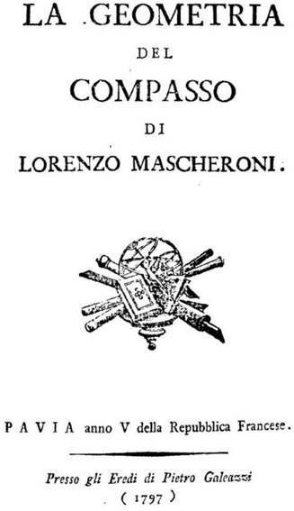
Figure 26.1.
The brilliant discovery that all geometric constructions that are possible to create with a straight edge and a pair of compasses can be created with the compasses alone is actually named after Mascheroni. He came upon a proof of this theorem that is different from Georg Mohr’s proof; and, since we refer to this technique as Mascheroni constructions, we will focus on Mascheroni’s life here.
Lorenzo Mascheroni was born in Bergamo, Lombardi, Italy, in 1750, to a wealthy family that motivated him to become a priest, and he was ordained in 1767. Soon thereafter, he taught rhetoric, and, later on, in 1778, he taught mathematics and physics at the seminary in Bergamo. This led him to become a professor of mathematics at the University of Pavia, where in 1789 he became the rector of the university, a position he held for the next four years.
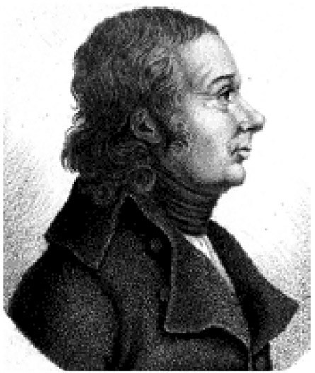
Figure 26.2. Lorenzo Mascheroni, ca. 1790.
Mascheroni so admired Napoleon Bonaparte that he dedicated his book Geometria del compasso to him in 1797. He also received quite a few tributes for his work, largely in geometry, by being elected to the Academy of Padua, the Italian Society of Science, and the Academy of Mantua. In 1795, the metric system was introduced in Europe, and Mascheroni was appointed to travel to Paris and study the new system so that he could report back to the government in Milan. He published a report in 1798, but he was confined to Paris as a result of the unrest stemming from Napoleon’s wars affects throughout Europe. From the weather there Mascheroni caught a normal cold, which then brought on further complications leading to a fatal viral infection, resulting in Mascheroni’s death on July 14, 1800.
Let us now take a careful look at what a fantastic discovery Lorenzo Mascheroni made regarding those constructions that still bear his name: Mascheroni constructions, despite the fact that Mohr seems to have first made this discovery—albeit with other techniques, and, as was already mentioned, without Mascheroni’s knowledge. We will look at Mascheroni’s work in some detail because the results are truly counterintuitive.
Before we actually demonstrate that the compasses can replace the unmarked straightedge to construct a straight line, we will begin by showing a few constructions that normally would involve the unmarked straightedge but here will be done with compasses alone.
In order to make our discussions more concise, we will use a shorthand method for referring to a circle, or the arc of a circle, in the following way: A circle whose center is point P and has a radius length AB will be referred to with (P, AB).1 Also, we know that any two points determine a line, so we will refer to a line using any two of its points; for example, the line containing the points A and B will be referred to as simply AB.
We will begin with a critical construction that would be necessary to demonstrate how Mascheroni constructions can manifest themselves. Here we will attempt to find a point E on the line AB so that AE = 2(AB).
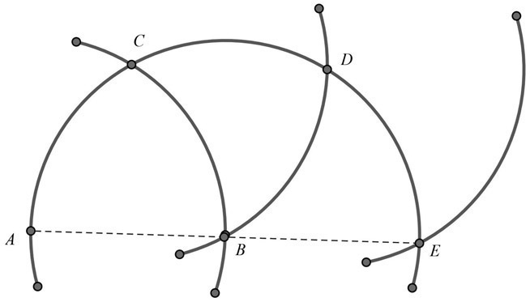
Figure 26.3.
Follow along as we use figure 26.3, where we begin by considering the line segment AB. We then draw arc (B, AB). We let arc (A, AB) intersect arc (B, AB) at point C. Then let arc (C, AB) intersect arc (B, AB) at point D. Further, we let arc (D, AB) intersect arc (B, AB) at point E. We can now notice that AB = BE, or that AE = 2(AB), which we set out to construct. Some may ask, how do we know that point E, in fact, lies on line AB? If we look at triangles ABC, CBD, and DBE (fig. 26.4), we should realize that they are equilateral triangles. Therefore, the angles ABC, CBD, and DBE are each 60°, which then form a straight line, ABE.
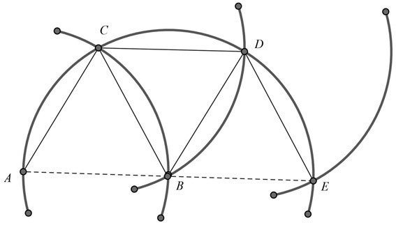
Figure 26.4.
Using the technique above, we can construct a line segment whose measure is n times the measure of any given line segment, where n = 1, 2, 3, 4, . . . . We can show this in figure 26.5 by continuing the doubling of line segment AB. This will allow us to create line segments that are three times, four times, five times, and so on, as long as segment AB.
As shown in figure 26.5, we will have segments multiple times as long as segment AB. We do this as follows. We draw (E, AB) to intersect (D, AB) at point F; then we draw (F, AB) to intersect (E, AB) at point G; then (G, AB) to intersect (F, AB) at point H; then (H, AB) to intersect (G, AB) at point I; then (I, AB) to intersect (H, AB) at point J; and then (J, AB) to interest (I, AB) at point K. This process can then continue indefinitely. Notice also how we were able to place many points on the line AB, which is one of our considerations for creating the line AB with countless many points.
Now that we have shown that we can construct a line segment that is a multiple length of any given line segment along that line by adding countless many points, let us now try to find segments that are a fraction of a given segment, or say,
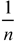
th the measure of a given line segment.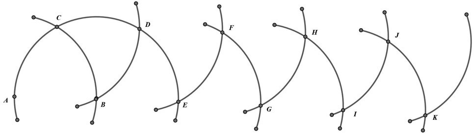
Figure 26.5.
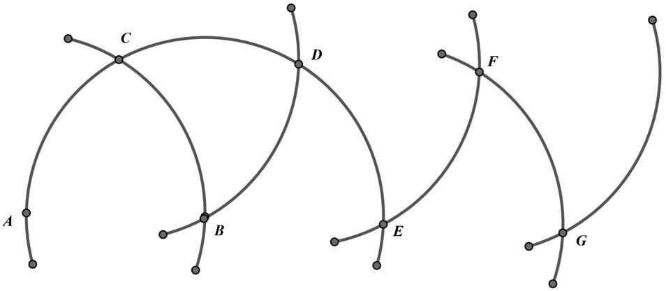
Figure 26.6.
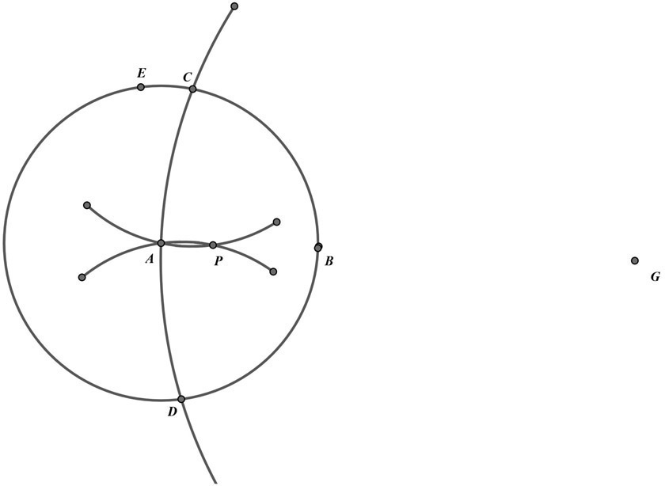
Figure 26.7.
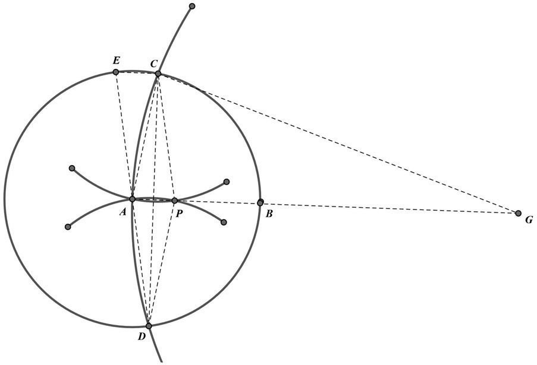
Figure 26.8.
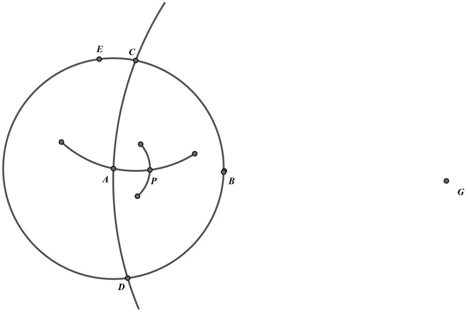
Figure 26.9.
We will begin by drawing a line segment AG, which will be three times the length of AB using the method above (see fig. 26.6).
To make matters a little clearer, we will just copy the line segment ABG, where
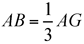
as shown in figure 26.6, and begin our construction that would be one-third the length of AB. We begin by drawing the circle (A, AB). Next, we draw arc (G, GA) to intersect the circle (A, AB) at points C and D, as shown in figure 26.7. The intersection-point P of arcs (C, CA) and (D, DA) is a trisection point of the segment AB, or in other words,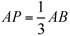
. To find the other trisection point of AB, we merely use the process mentioned above for duplicating a line segment, in this case duplicating AP.To better explain why this procedure works, we refer to figure 26.8, where we are adding some lines merely to explain the justification for this construction. We must first show that the point P actually lies on line ABG. The points A, P, and G lie on the perpendicular bisector of line segment CD, and, therefore, they are collinear. The two isosceles triangles CGA and PAC are similar, since they share a common base angle, namely, angle CAP. Therefore,
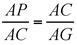
. However, since AC = AB, we have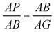
. Since we know that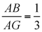
, we have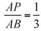
, or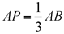
.There is an alternate method for doing this construction, that is, for locating the point P: We use the first Mascheroni construction to find the point E diametrically opposite point D. Or to put it another way, DAE is the diameter of circle (A, AB). Since in figure 26.8, the quadrilateral ECPA is a parallelogram, EC = AP. Therefore, we can find the point P by locating the intersection of arc (A, EC) and arc (C, CA). We show this in figure 26.9.
In order to justify Lorenzo Mascheroni’s statement that all constructions possible with the usual geometric construction tools—the unmarked straightedge and a pair of compasses—can be done by using only compasses, as we have shown in the earlier constructions, we need not necessarily show that every imaginable construction can be done this way. Rather, we need to show only that the five following constructions are possible with compasses alone; with these five at our disposal, we are able to do all the geometric constructions that are typically created with the usual tools: a straightedge and compasses. The following five fundamental constructions are those upon which all other constructions are dependent. That is, any construction using both straightedge and compasses is merely a finite number of successions of these constructions:
- Draw a line through two given points.
- Draw a circle with a given center and a given radius.
- Locate the points of intersection of two given circles.
- Locate the points of intersection of a straight line (given by two points) and a given circle.
- Locate the point of intersection of two straight lines (each of which is given by two points).
Although we cannot actually draw a line through the two given points, we can place as many points as we wish on the line and—perhaps working for an infinitely long time—all the points between these two points will eventually appear on that line. That would essentially satisfy the first condition listed above. The second and third constructions listed above, clearly, need no further discussion, since they are done by compasses alone. To locate the point of intersection of a straight line given by two points, say, A and B, and a given circle, (O, r), we will need to consider two cases: one for which the center of the circle is not on the given line, and one for which the center of the circle does lie on the given line.
First, we consider the case for which the center of the circle does not lie on the given line. Here we have circle (O, r) and the straight line AB, as shown in figure 26.10 (a dashed line is there merely to help us see the line AB, which was determined by only two points, A and B).
We need to find point Q, which is the point of intersection of the arcs (B, BO) and (A, AO). We then draw the circle (Q, r). The points of intersection of the circles (Q, r) and (O, r) are the required points of intersection of line AB and the circle (O, r).
This can be justified in the following way. Point Q was chosen so as to make AB the perpendicular bisector OQ. By drawing circle (Q, r) congruent to an intersecting circle (O, r), the common chord PR is also the perpendicular bisector of OQ.
The second case to consider is when the center of the given circle lies on the given line. Here, we will consider the circle (O, r) and the straight-line AB, which is shown in figure 26.11.
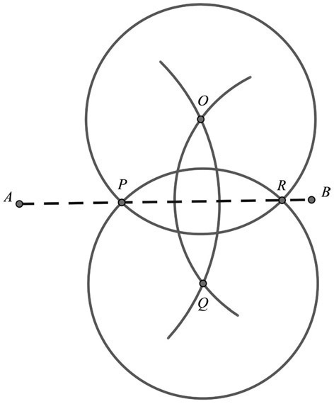
Figure 26.10
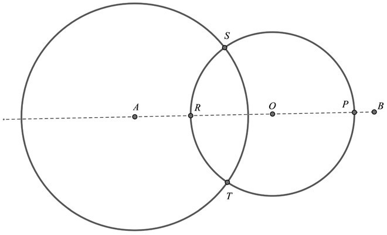
Figure 26.11
In figure 26.11, we draw circle (A, x), where radius length x is large enough to intersect circle (O, r) in two points, S and T. The midpoints of the major and minor arcs of ST, are P and R. This becomes a bit more complicated and will be shown in the following manner.
In the interest of completing the above argument, we will now focus our attention on bisecting a given arc ST. To begin our construction (see fig. 26.12) we will let OS = OT = r, where O is the center of the circle of which ST is an arc. We will let the distance between S and T be equal to d, and then draw the circle (O, d). We then draw the circles (S, SO) and (T, TO), which will intersect the circle (O, d) at points M and N, respectively. Next, we draw arcs (M, MT) and (N, NS); each will meet at point K. By drawing arcs (M, OK) and (N, OK), we find that their points of intersection, C and D, are the desired midpoints of the arcs ST.
In order to demonstrate why this construction does what is purported to have been done, namely to find the midpoints of arc ST, we will draw some auxiliary lines to help explain the construction as shown in figure 26.13.
Let’s first look at quadrilaterals SONT and TOMS. These quadrilaterals are parallelograms since both pairs of opposite sides are congruent. This allows us to conclude that the points M, O, and N are collinear. Since CN = CM, and KN = KM, we then can conclude that KC and MN are perpendicular at O. We can also conclude that CO ⊥ ST. Therefore, CO bisects the segment ST, and consequently the arc ST. Our remaining task is merely to show that the point C lies on circle (O, r), or to show that CO = r.
In order to do this, we will rely on a useful theorem in geometry that states that the sum of the squares of the measures of the sides of a parallelogram equals the sum of the squares of the measures of the diagonals.2 Applying this to parallelogram SONT, we get the following: (SN)2 + (TO)2 = 2(SO)2 + 2(ST)2 or (SN)2 + r2 = 2r2 + 2d2 or, which gives us
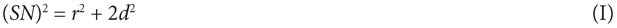
By applying the Pythagorean theorem to right ∆KON, we obtain the following:
(KN)2 = (NO)2 + (KO)2. However, since KN = SN, we have:
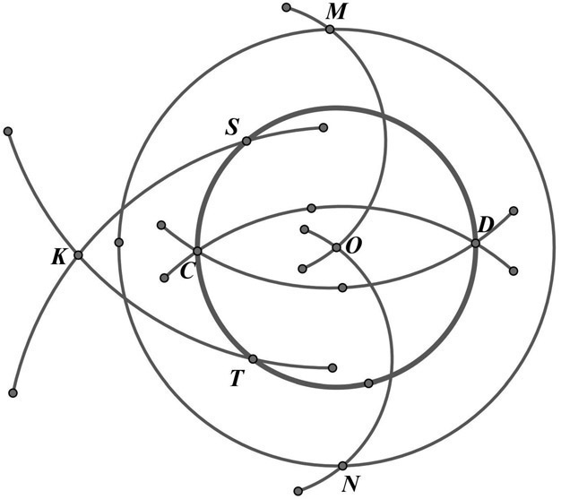
Figure 26.12
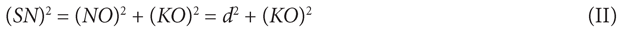
Combining equations (I) and (II), we have: r2 + 2d2 = d2 + (KO)2, or r2 + d2 = (KO)2.
We are now approaching the conclusion by considering right triangle CON where once again applying the Pythagorean theorem we get: (CO)2 + (NO)2 = (CN)2 or (CO)2 = (CN)2 – (NO)2. We know that (M, OK) and (N, OK) intersect at point C, and that CN is the radius of these two circles. Therefore, CN = OK. With appropriate replacements in the above equation, we get: (CO)2 = (KO)2 – d2 = r2 + d2 – d2 = r2. Therefore, we have shown that CO = r, which is what we set out to demonstrate.
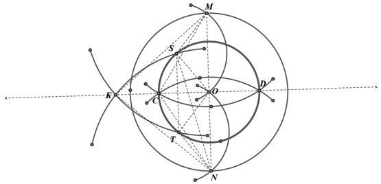
Figure 26.13
To complete our justification of the Mascheroni constructions, we need to demonstrate that the fifth construction on our original list (above) can be done with compasses alone. In other words, we now want to show that we can find the point of intersection of two straight lines, AB and CD with only a pair of compasses (see fig. 26.14). Although there are quite a few arcs to be drawn to do this construction, just follow along step-by-step—perhaps making your own drawing as you go—and the result will be rewarding.
To begin the construction, we will let arcs (C, CB) and (D, DB) meet at point E. Then we will let the arcs (A, AE) and (B, BE) meet at point F. Next, we will draw the arcs (E, EB) and (F, FB) which will meet at point G. Continuing with the construction we will have arcs (B, BE) and (G, GB) meet at point H. Finally, we will have arcs (E, EB) and (H, HB) meet at point I. The point we seek, namely, the intersection of the two straight lines AB and CD, is the point M, which is the point of intersection of the arcs (H, HB) and (I, IG).
Now comes the task of justifying that this construction does what it purports to do. Once again you will need some auxiliary lines as you will see in figure 26.15. Keep in mind that we must show that point M is on both line AB and line CD.
You will notice in figure 26.15 that EI = EB = BH = HI, since they are radii of equal circles. Similarly, IM = IG. We can then conclude that the arcs IM and IG are congruent. The inscribed angle IBM has one half the measure of its intercepted arc IM; similarly,
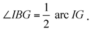
Therefore, we can conclude that ∠IBM = ∠IBG. This also allows us to establish that the point M is on line BG. Furthermore, we know that lines AB and BG are each perpendicular bisectors of EF. Again, this allows us to establish that point M must lie on AB. We now need to show that M also lies on line CD. We can easily show that triangle BGH and triangle BHM are similar. Consequently, it follows that
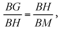
but since BH = BE, we get the following proportion:
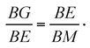
We can then establish a similarity between triangles GEB and EMB, since they both share a common angle MBE and the sides including this angle are in proportion. Since we can show that triangle GEB is isosceles, we also then know that triangle EMB must also be isosceles. Therefore EM = MB. Line CM is thus the perpendicular bisector of line segment EB. We may, therefore, conclude that point M must lie on line CD. Thus, we have demonstrated that the point M is at the intersection of the lines AB and CD.
Although this previous discussion was rather complicated, it used nothing more than elementary geometry, and, as a result, showed that the five possible constructions that can be created with an unmarked straightedge and a pair of compasses can also be made with just a pair of compasses alone. As we mentioned earlier, these Mascheroni constructions can also be attributed to the Danish mathematician Mohr—representing a misattribution. This does, on occasion, occur in mathematics, especially when, as is typical in the Western world, we look at the history of mathematics through European eyes. Another example of this is the famous Pythagorean theorem. We attribute this finding to the Greek philosopher Pythagoras, who flourished a few centuries after other citings of this famous relationship, such as the Sulva Sutra, which was written by the Indian mathematician Baudhayana in about 800 BCE, where there is a reference made to this geometric relationship—yet we still call it the Pythagorean theorem. Let’s bear in mind, though, that just as Pythagoras likely did not know about Baudhayana’s earlier discovery, Mascheroni wrote Geometria del compasso without any knowledge of the previous work by Mohr; therefore, we still give them credit for this marvelous finding.
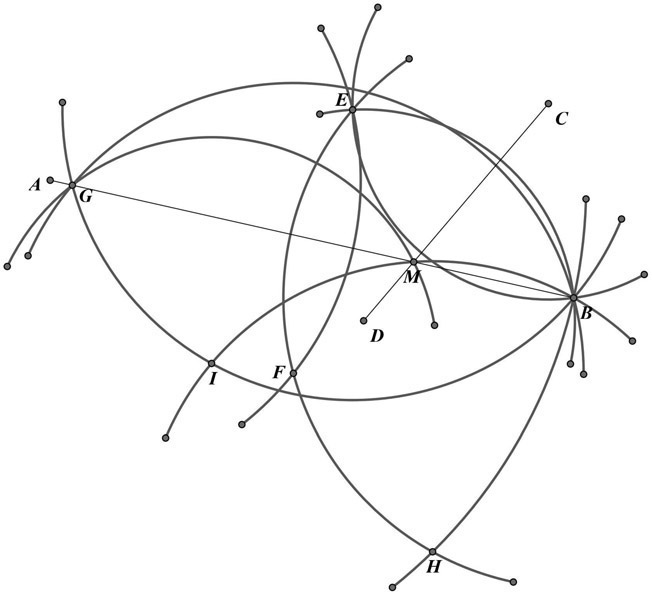
Figure 26.14
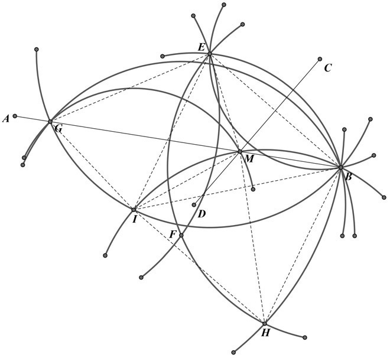
Figure 26.15